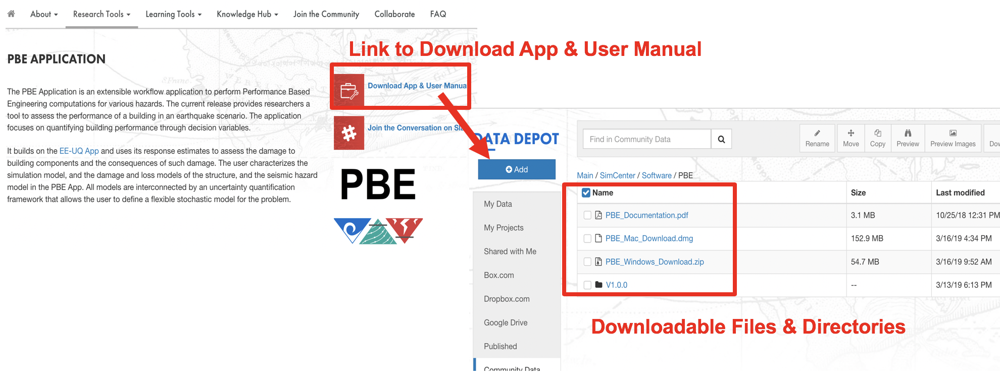
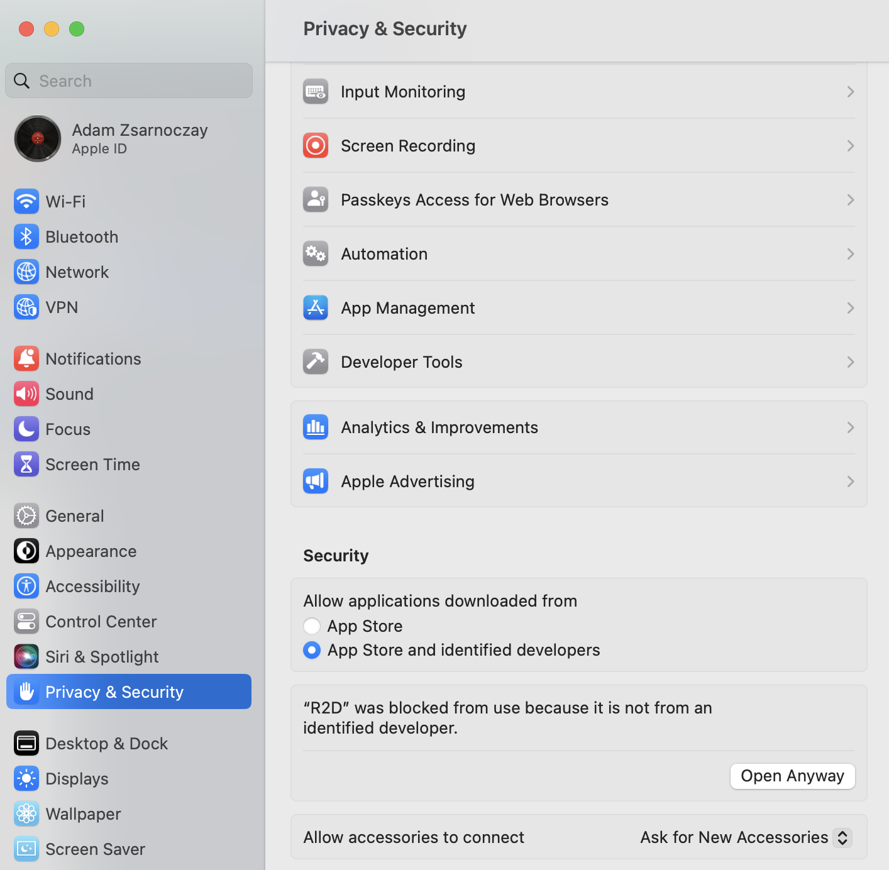
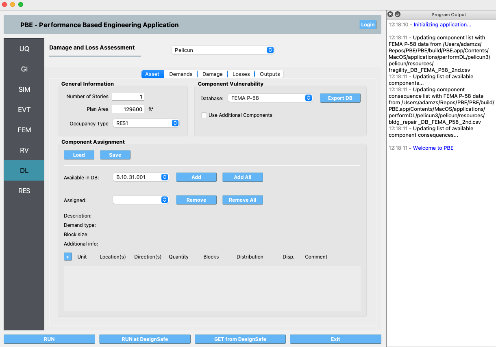
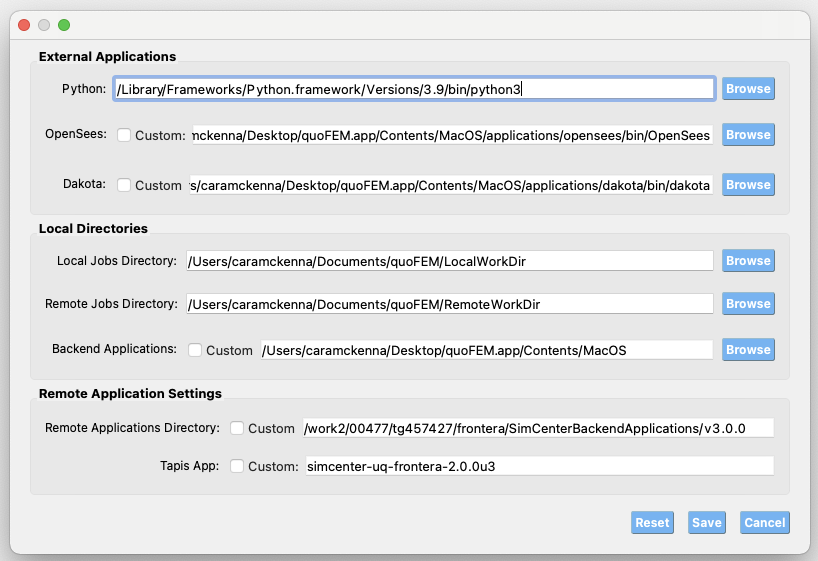

1.1.2. Install on macOS¶
Setting up PBE app on macOS takes five short steps:
Install Python (3.10, 3.11, or 3.12).
Install the SimCenter Python package (one
pip installcommand).Note your Python path – PBE needs it.
Download and install the PBE app.
Launch PBE and tell it where Python is.
When you’re done, run a test example to confirm everything works.
1.1.2.1. Step 1 – Install Python¶
PBE works with any Python in the 3.10 – 3.12 range. We recommend 3.12. Pick one of the three options below.
Option A: Install the bundled Python 3.12 (recommended for most users)
Click PBE Download. On the download page, find
python-3.12.X-macos11.pkg (we provide a copy from
python.org’s macOS downloads).
Download and double-click the .pkg to run the installer;
accept the defaults and let it finish.
Option B: Use an existing Python
If you already have Python 3.10, 3.11, or 3.12 installed, you can reuse it. We strongly recommend creating a virtual environment first so PBE’s packages don’t mix with whatever else you’ve got – see the appendix at the end of this page, then come back here.
To check what you have, open Terminal (Spotlight: ⌘+Space, type “Terminal”, press Enter) and run:
python3 --version
If it reports a 3.10, 3.11, or 3.12 number, you’re set.
Option C: Use a virtual environment
If you’d like a clean, isolated Python environment dedicated to PBE – whether or not you already have Python installed – see the appendix at the end of this page, then continue with Step 2.
1.1.2.2. Step 2 – Install the SimCenter Python Package¶
In Terminal, run:
python3.12 -m pip install --upgrade "nheri_simcenter[pbe]"
The [pbe] extra tells the installer to pull in only what PBE
needs (Pelicun for damage and loss, atc138 for functional recovery,
the REDi engine, and a few support libraries). The download is
modest – a few hundred megabytes – and the install typically
finishes in 1 to 3 minutes.
If you used Option B and your Python is 3.10 or 3.11, replace
python3.12 with python3.10 or python3.11 in the command
above. If you used Option C, activate your virtual environment
first (see appendix); then the command is just
pip install --upgrade "nheri_simcenter[pbe]".
Note
If pip fails with an SSL error (“CERTIFICATE_VERIFY_FAILED”
or similar), open /Applications/Python 3.12/ in Finder and
double-click Install Certificates.command. That installs
the certificate authority bundle Python uses for HTTPS. Then
re-run the pip install command.
Note
If Terminal says “command not found: python3.12”, you need
to add Python to your shell’s $PATH. The simplest fix is to
open /Applications/Python 3.12/ in Finder and double-click
Update Shell Profile.command. Close Terminal and reopen it,
then retry.
PBE itself does not require Python to be on your $PATH; this
step is only for convenience when running pip from the
command line. If you’d rather not modify your shell, you can run
pip using the full path:
/Library/Frameworks/Python.framework/Versions/3.12/bin/python3.12 -m pip install --upgrade "nheri_simcenter[pbe]"
1.1.2.3. Step 3 – Note Your Python Path¶
PBE needs the full path to the Python interpreter you just used.
Find it with the which command in Terminal.
If you used the bundled Python 3.12 (Option A):
which python3.12
You should see something like:
/Library/Frameworks/Python.framework/Versions/3.12/bin/python3.12
If you used a virtual environment (Option C), activate it first, then run:
which python3
You should see a path inside your environment, for example:
/Users/YOUR_LOGIN/PBE_env/bin/python3.12
Copy this path – you’ll paste it into PBE in Step 5.
1.1.2.4. Step 4 – Download and Install PBE¶
Click PBE Download again. Two macOS builds are listed:
...arm64...Mac_Download.dmg– for Apple Silicon Macs (chips named M1, M2, M3, or M4)...x86_64...Mac_Download.dmg– for older Intel-based Macs
To check which you have: click the Apple menu in the top-left corner of your screen and choose About This Mac. Look at the Chip (or Processor) line. If it starts with “Apple”, you want the arm64 download. If it says “Intel”, you want the x86_64 download. If you pick the arm64 build on an Apple Silicon Mac, PBE runs natively and is significantly faster than under emulation.

Fig. 1.1.2.4.1 PBE download page.¶
Click the matching .dmg file to download it. When the download
finishes, double-click the .dmg to mount it, drag PBE to a
folder on your computer (most users put it in Applications or
on the Desktop), then eject the .dmg.
1.1.2.5. Step 5 – First Launch and Configure Python Path¶
Double-click PBE to launch it.
PBE is code-signed and notarized by NHERI SimCenter, but because it isn’t distributed through the App Store, macOS may flag it as coming from an unidentified developer the first time you open it. If you see a dialog refusing to open the app:
Right-click PBE in Finder and choose Open from the menu; confirm the prompt.
If that still fails, open System Settings -> Privacy & Security, scroll to the section about PBE having been blocked, and click Open Anyway.
{kind=link}

Fig. 1.1.2.5.1 Privacy & Security panel showing the Open Anyway option.¶
Once PBE is running, you’ll see the main window:
{kind=link}

Fig. 1.1.2.5.2 PBE on first launch.¶
In the menu bar, choose File -> Preferences (on some macOS versions, this is PBE -> Settings). Paste the Python path you saved in Step 3 into the Python field at the top, then click Save.
{kind=link}

Fig. 1.1.2.5.3 Setting the Python path in PBE’s Preferences.¶
1.1.2.6. Test the Installation¶
To confirm everything works end-to-end, run our smallest example, FEMA P-58 Assessment Using External Demands. Open the example via the Examples menu. Click the RUN button at the bottom. After a minute the RES tab becomes active and shows results – if it does, you’re done.
If anything goes wrong at any of the steps above, please post on our github discussion page.
1.1.2.7. Appendix – Using a Virtual Environment¶
A virtual environment is a self-contained folder that holds its own copy of the Python packages PBE needs, without touching the rest of your system. It’s the safest option if you already use Python for other things, or if you’d just like a clean, contained PBE setup. Here’s how to make one.
Create the environment. In Terminal, run:
python3.12 -m venv ~/PBE_env
This creates a folder named PBE_env in your home directory.
You can pick any other location and any other name – just keep
the path in mind for the next steps.
If you have Python 3.10 or 3.11 instead of 3.12, replace
python3.12 with python3.10 or python3.11 here and in
every command below.
Activate the environment. Each Terminal session that wants to use this environment must “activate” it first:
source ~/PBE_env/bin/activate
Your prompt will change to show (PBE_env) at the front –
that’s how you know the environment is active. While active,
python3.12 and pip refer to the copies inside PBE_env,
not the ones on your wider system.
Now go back to Step 2 and run the pip install command.
Deactivate when you’re done (optional). To leave the environment, run:
deactivate
Your prompt returns to normal. You don’t have to deactivate manually – closing the Terminal window has the same effect. Next time you want to install or update PBE’s Python packages, just open Terminal and run the activate command again.